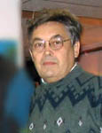

| Не искушай! |
| "Жизнь прожить - не поле перейти" - все мы хорошо знаем эту пословицу и знаем, что она верна: в поле нет никакой дороги, ни ровной и гладкой ни ухабистой, вообще нет дороги! Кто-то ищет хотя бы тропинку, кто-то пытается найти внешний ориентир и угадать направление движения. Но всем нам в начале нашего пути предложены карты и компас: берите, учитесь, пользуйтесь и идите! Время от времени возникаю препятствия, ложные тропинки и дороги, голоса внешние с рекомендациями и строгие экзаменаторы. Больше всего боимся искушений, но от кого они? |  |
| От Матфея 4 5 Потом берет Его диавол в святой город и поставляет Его на крыле храма, 6 и говорит Ему: если Ты Сын Божий, бросься вниз, ибо написано: Ангелам Своим заповедает о Тебе, и на руках понесут Тебя, да не преткнешься о камень ногою Твоею. 7 Иисус сказал ему: написано также: не искушай Господа Бога твоего. От Луки 4 9 И повел Его в Иерусалим, и поставил Его на крыле храма, и сказал Ему: если Ты Сын Божий, бросься отсюда вниз, 10 ибо написано: Ангелам Своим заповедает о Тебе сохранить Тебя; 11 и на руках понесут Тебя, да не преткнешься о камень ногою Твоею. 12 Иисус сказал ему в ответ: сказано: не искушай Господа Бога твоего. |
| Что такое "не искушай", может быть это "не дразни"? В недавнем переводе Библии осталось выражение "не искушай", потому что оно более емкое и значимое. Иисус повторил слова написанные в Ветхом Завете, а именно: |
| Второзаконие 6 16 Не искушайте Господа, Бога вашего, как вы искушали Его в Массе. 17 Твердо храните заповеди Господа, Бога вашего, и уставы Его и постановления, которые Он заповедал тебе; 18 и делай справедливое и доброе пред очами Господа, дабы хорошо тебе было, и дабы ты вошел и овладел доброю землею, которую Господь с клятвою обещал отцам твоим, |
| Напомню об эпизоде "как вы искушали Его в Массе": |
| Исход 17 1 И двинулось все общество сынов Израилевых из пустыни Син в путь свой, по повелению Господню, и расположилось станом в Рефидиме, и не было воды пить народу. 2 И укорял народ Моисея, и говорили: дайте нам воды пить. И сказал им Моисей: что вы укоряете меня? что искушаете Господа? 3 И жаждал там народ воды, и роптал народ на Моисея, говоря: зачем ты вывел нас из Египта, уморить жаждою нас и детей наших и стада наши? 4 Моисей возопил к Господу и сказал: что мне делать с народом сим? еще немного, и побьют меня камнями. 5 И сказал Господь Моисею: пройди перед народом, и возьми с собою [некоторых] из старейшин Израильских, и жезл твой, которым ты ударил по воде, возьми в руку твою, и пойди; 6 вот, Я стану пред тобою там на скале в Хориве, и ты ударишь в скалу, и пойдет из нее вода, и будет пить народ. И сделал так Моисей в глазах старейшин Израильских. 7 И нарек месту тому имя: Масса и Мерива, по причине укорения сынов Израилевых и потому, что они искушали Господа, говоря: есть ли Господь среди нас, или нет? |
| На первый взгляд народ совершенно справедливо предъявил претензии Моисею: Моисей вывел народ из Египта и должен обеспечить нормальную дорогу и нормальную пищу конечно без воды оставить детей - это совсем плохо! Также и в эпизоде с Иисусом: что стоило бы Иисусу показать Свою Силу и прыгнуть вниз? Конечно же Он бы не разбился! Но! ... Не Моисей вывел народ из Египта, а Бог! Не человека по имени Иисус искушал дьявол, а Бога! Моисей за разрешением проблемы обратился к Богу и получил ее и преподнес народу - Господь еще среди нас! Иисус, как Бог, не стал действовать по предложенной дьяволом схеме, а отверг ее. Часто люди между собой навязывают друг другу свои схемы действий и эти схемы заранее более выгодны для противника. Впрочем всю нашу жизнь мы проживаем по схемам учителей, родственников, друзей, знакомых и государственных чиновников или прочих людей. Мы и сами производим схемы и навязываем их другим. Соответствуют ли они предложенным Богом для нас или являются в конечном счете искушением Бога с нашей стороны? Одно из значений "искушения" - это испытание, экзамен. Мы начинаем сдавать такие экзамены с первых дней жизни, вначале неосознанно (у нас берут какие-то анализы или изучают нашу реакцию на то или иное действие), а потом тесты следуют один за другим и скоро экзамены определяют наше движение по жизни. Мало найдется людей любящих сдавать экзамены, большинство предпочитает гладкую дорогу: |
| От Матфея 6 13 и не введи нас в искушение, но избавь нас от лукавого. Ибо Твое есть Царство и сила и слава во веки. Аминь. От Луки 11 4 и прости нам грехи наши, ибо и мы прощаем всякому должнику нашему; и не введи нас в искушение, но избавь нас от лукавого. |
| Последние два десятилетия наша историческая Родина ( Советский Союз или Россия) переживает тяжкие испытания. А перед этим была революция, гражданская война, строительство государства и тяжкая война с фашистами. Дорогие братья и сестры! Мы нашим желанием и волею Господа переехали в Канаду. Страна с похожим климатом, но чужим для нас языком и чуждым менталитетом. Мы уезжали на лучшую жизнь, мы уезжали от хамства и произвола властей и криминала, мы хотели сберечь наших детей, мы не желали быть рабами кого-то. И здесь нас ждали непрерывные искушения и экзамены: |
| Иакова 1 2 С великою радостью принимайте, братия мои, когда впадаете в различные искушения, 3 зная, что испытание вашей веры производит терпение; 4 терпение же должно иметь совершенное действие, чтобы вы были совершенны во всей полноте, без всякого недостатка. ... 12 Блажен человек, который переносит искушение, потому что, быв испытан, он получит венец жизни, который обещал Господь любящим Его. 13 В искушении никто не говори: Бог меня искушает; потому что Бог не искушается злом и Сам не искушает никого, 14 но каждый искушается, увлекаясь и обольщаясь собственною похотью; |
| Многие ли из нас обратились, как Моисей, к Господу за разрешением проблем, возникших при нашем приезде в Канаду? Возможно, что все сидящие сейчас здесь, так и сделали, но посмотрите сколько вокруг вас живет людей не верящих Господу и решающих свои проблемы без Его помощи, опираясь только на свои силы и принимая только свою схему жизни. Схема эта довольно проста: найти хорошую работу, купить дом и перейти на еще более хорошую работу, чтобы успешно выплатить кредит за дом. Попутно дать образование детям и выдать замуж или женить. Далее я продолжать не буду. А что Господь предлагает лучшую схему? Да, лучшую! И мы с вами живем по схеме Господа! Чем же она отличается? На внешний, посторонне-равнодушный взгляд - ничем! Также, как и все, мы стремимся найти лучшую работу, заботимся о жилье, образовании для детей. Но, основное отличие - внутреннее. Мы живем с Господом, Он ведет нас по этой жизни, Он привел нас в эту страну и Он нам дает все необходимое для нашей жизни. Нам жить здесь тяжелее, чем остальным, потому что помимо искушений от людей и дьявола мы имеем искушения и от Господа! Нужно помнить искушение Авраама: |
| Бытие 22 1 И было, после сих происшествий Бог искушал Авраама и сказал ему: Авраам! Он сказал: вот я. 2 [Бог] сказал: возьми сына твоего, единственного твоего, которого ты любишь, Исаака; и пойди в землю Мориа и там принеси его во всесожжение на одной из гор, о которой Я скажу тебе. |
| Господь проверяет и испытывает нас, но не как злой демон, а как любящий Отец! Апостол Иаков недаром пишет (я читал это чуть ранее):"В искушении никто не говори: Бог меня искушает; потому что Бог не искушается злом и Сам не искушает никого", здесь следует понимать: "Сам не искушает никого злом", или "со зла" или "для зла". Более того: |
| 1-е Коринфянам 10 13 Вас постигло искушение не иное, как человеческое; и верен Бог, Который не попустит вам быть искушаемыми сверх сил, но при искушении даст и облегчение, так чтобы вы могли перенести. |
| Бог учитывает запас наших сил и не даст испытания сверх меры и не допустит другого искушения сверх предела нашего, потому что все Он обращает в наше благо. Простой пример из нашей сегодняшней жизни: Пришла пора одному брату нашему во Христе сдавать очередной тест на вождение автомобиля. Сдавать надо на полностью исправной машине, чтобы ничего нигде не скрипело и не свистело, чтобы все лампочки мигали и горели как надо и чтобы все приборы показывали нужное. Решил он что его машина (а у него большой van) не подходит, потому как механику надо показать перед экзаменом, а что-то посвистывает внутри, значит платить надо и наверное немало. Поехали на машине автошколы, и поездка была простой, потому как брат наш уже много много лет ездит. Эззамен не сдал! Как так, ведь ничего не нарушил и ни одного замечания от экзаменатора не услышал! В листе экзамена стояли мелкие нарушения, типа: перестроился без команды, близко останавливался перед линией "стоп", недостаточно вертел головой на перекрестках и т.п. Огорчение! Следущий раз можно сдавать через 10 дней, но снова денежку готовь! Брат наш решил изменить исходное и сдавать следующий раз на своей машине. Поехал к механику. Осмотрел механик машину и говорит: "Ты как же, каким чудом живой до меня доехал!" Оказывается левое колесо в любой момент могло отвалится от рулевого управления, а значит стать неуправляемым. Механик заметил: "Если случилось бы это на хайвее, то от тебя собирать бы нечего было!" Конечно неисправность эту устранили, но брат возрадовался тому, что Господь через несдачу экзамена спас его жизнь и может жизнь семьи его. Нас, верующих Богу, упрекают часто в том, что мы во всем ищем проявление Воли Господа. А нам и искать не надо, мы ее просто видим. Каждый из нас может привести множество примеров поучительных для нас и окружающих, если слушаются Господа. Бывает и по другому: |
| Второзаконие 13 1 Если восстанет среди тебя пророк, или сновидец, и представит тебе знамение или чудо, 2 и сбудется то знамение или чудо, о котором он говорил тебе, и скажет притом: "пойдем вслед богов иных, которых ты не знаешь, и будем служить им", - 3 то не слушай слов пророка сего, или сновидца сего; ибо [чрез] [сие] искушает вас Господь, Бог ваш, чтобы узнать, любите ли вы Господа, Бога вашего, от всего сердца вашего и от всей души вашей; 4 Господу, Богу вашему, последуйте и Его бойтесь, заповеди Его соблюдайте и гласа Его слушайте, и Ему служите, и к Нему прилепляйтесь; 5 а пророка того или сновидца того должно предать смерти за то, что он уговаривал вас отступить от Господа, Бога вашего, выведшего вас из земли Египетской и избавившего тебя из дома рабства, желая совратить тебя с пути, по которому заповедал тебе идти Господь, Бог твой; и [так] истреби зло из среды себя. |
| Жесткие рекомендации, и в наш век вряд ли осуществимые! Другие стандарты и другие законы управляют нашими государствами. мы смотрим с сожалением на господство греха, на людей попадающих в его сладкие сети. Но и это уже давно описано в Библии: |
| Малахия 3 14 Вы говорите: "тщетно служение Богу, и что пользы, что мы соблюдали постановления Его и ходили в печальной одежде пред лицем Господа Саваофа? 15 И ныне мы считаем надменных счастливыми: лучше устраивают себя делающие беззакония, и хотя искушают Бога, но остаются целы". 16 Но боящиеся Бога говорят друг другу: "внимает Господь и слышит это, и пред лицем Его пишется памятная книга о боящихся Господа и чтущих имя Его". 17 И они будут Моими, говорит Господь Саваоф, собственностью Моею в тот день, который Я соделаю, и буду миловать их, как милует человек сына своего, служащего ему. 18 И тогда снова увидите различие между праведником и нечестивым, между служащим Богу и не служащим Ему. |
| Мы отличаемся от людей мира надеждой и упованием на Господа. Мы слабы без Господа и падаем, если отпускаем руку Его: |
| От Марка 14 35 И, отойдя немного, пал на землю и молился, чтобы, если возможно, миновал Его час сей; 36 и говорил: Авва Отче! все возможно Тебе; пронеси чашу сию мимо Меня; но не чего Я хочу, а чего Ты. 37 Возвращается и находит их спящими, и говорит Петру: Симон! ты спишь? не мог ты бодрствовать один час? 38 Бодрствуйте и молитесь, чтобы не впасть в искушение: дух бодр, плоть же немощна. 39 И, опять отойдя, молился, сказав то же слово. 40 И, возвратившись, опять нашел их спящими, ибо глаза у них отяжелели, и они не знали, что Ему отвечать. |
| Мы знаем, что землянам не миновать годины искушений. Сейчас нет дня на Земле без войны, нет дня без голода, нет дня без новых и новых болезней и это касается как бедных, так и богатых одинаково. Наша вся надежда на иисуса - нашего Господина и Спасителя! |
| Откровение 3 6 Имеющий ухо да слышит, что Дух говорит церквам. 7 И Ангелу Филадельфийской церкви напиши: так говорит Святый, Истинный, имеющий ключ Давидов, Который отворяет - и никто не затворит, затворяет - и никто не отворит: 8 знаю твои дела; вот, Я отворил перед тобою дверь, и никто не может затворить ее; ты не много имеешь силы, и сохранил слово Мое, и не отрекся имени Моего. 9 Вот, Я сделаю, что из сатанинского сборища, из тех, которые говорят о себе, что они Иудеи, но не суть таковы, а лгут, - вот, Я сделаю то, что они придут и поклонятся пред ногами твоими, и познают, что Я возлюбил тебя. 10 И как ты сохранил слово терпения Моего, то и Я сохраню тебя от годины искушения, которая придет на всю вселенную, чтобы испытать живущих на земле. |
| 23 июля 2006г. |